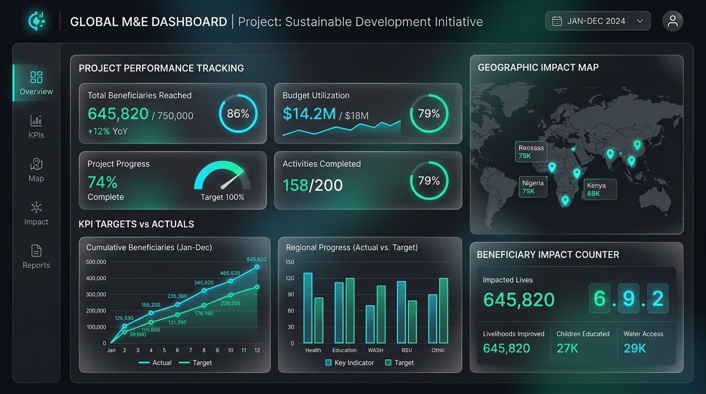
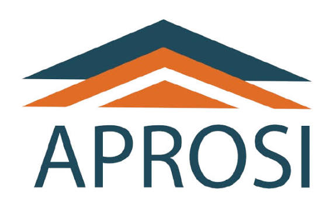

Pilotage Institutionnel & Direction
Système de Performance Institutionnelle & KPI
Conception et animation du système global de performance : définition des indicateurs clés (KPI), consolidation des données des directions opérationnelles et dashboards interactifs pour la Direction Générale
KPI Stratégiques
Power BI
Reporting Exécutif
Management par les résultats